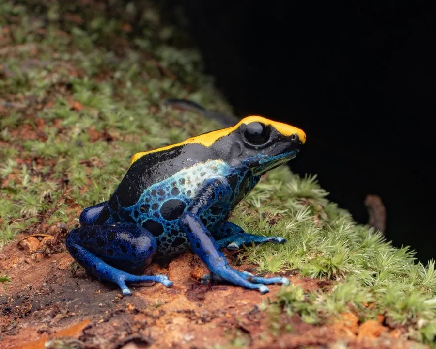

两栖动物 · 动物界
染色箭毒蛙 Dendrobates tinctorius

南美圭亚那高原的大型箭毒蛙，体色蓝黑相间、花纹多变，皮肤毒素来自食物，常被用于传统吹箭，也是宠物市场常见种类。
- 分类
- 门脊索动物门纲两栖纲目无尾目科箭毒蛙科属箭毒蛙属
- 栖息环境
- 南美热带雨林的落叶层、倒木与凤梨科植物附近
- 地理分布
- 圭亚那、苏里南、法属圭亚那及巴西东北部的热带雨林
- 保护级别
- IUCN 无危（LC）；CITES 附录 II；非中国原产
物种志
染色箭毒蛙体长 4–5 厘米，是箭毒蛙中体型较大的一种，身体粗壮，皮肤光滑，体色和花纹变化很大：有的以蓝色为主并缀黑色斑块，有的呈黑底黄斑或带有网纹，四肢粗壮，趾端有吸盘。它的皮肤含有生物碱毒素，毒素并非自身合成，而是来自取食的蚂蚁、螨虫等猎物。
它分布于圭亚那、苏里南、法属圭亚那和巴西东北部的热带雨林，白天在地面落叶层活动，以蚂蚁、白蚁、螨虫和小甲虫为食。繁殖期雄蛙鸣叫求偶，雌蛙在落叶或凤梨科植物叶腋中产卵 5–10 枚，雄蛙把孵化的蝌蚪背到积水处，雌蛙定期产下未受精卵喂养蝌蚪。它因体色艳丽而成为热门宠物，人工繁殖个体较多；在中国属于外来物种，不可随意放生。
形态与习性
- 食性蚂蚁、白蚁、螨虫和小甲虫
- 体长4–5 cm
- 毒性皮肤含生物碱毒素，毒性来自食物
- 繁殖卵生，每窝 5–10 枚，雄蛙背蝌蚪到积水处
- 活动节律昼行性，常在落叶层活动
- 寿命约 10–15 年
趣味知识
- 染色箭毒蛙的花纹变化极大，同一物种可能出现蓝、黄、黑等多种配色。
- 它的毒素来自食物中的蚂蚁和螨虫，人工改喂饲料后毒性会减弱。
- 南美原住民曾用箭毒蛙的皮肤分泌物涂抹吹箭箭头，用于狩猎。